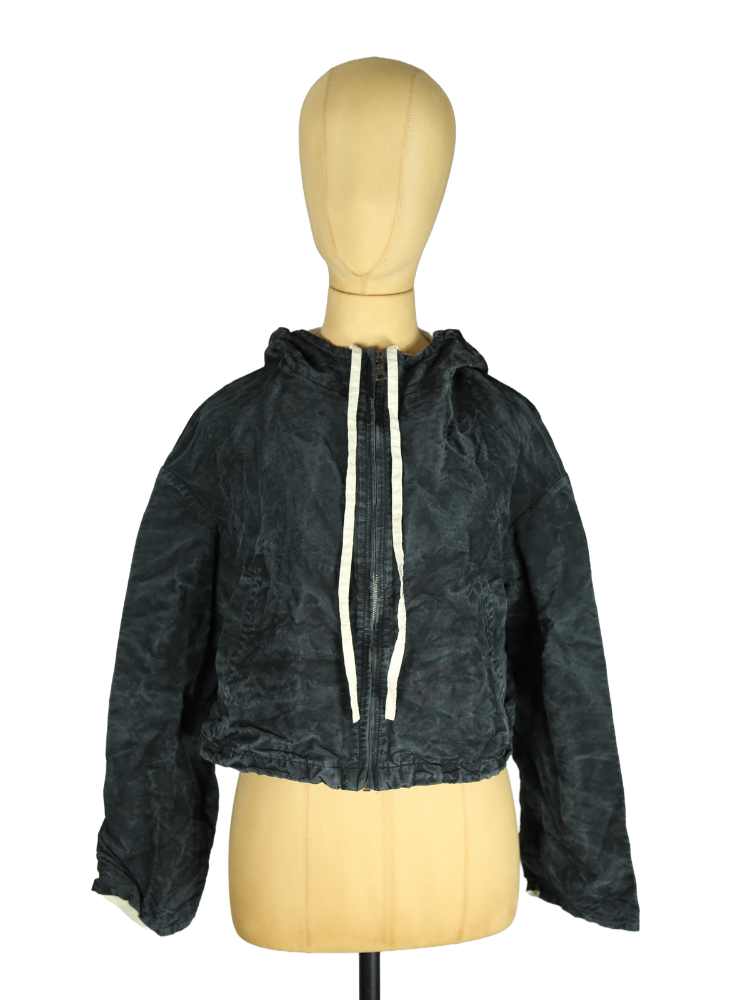

Prada
130.00 €
Aus dem kuratierten Archiv von Disorder119. Diese Prada Jacke zeichnet sich durch eine ungewöhnliche, avantgardistische Materialstruktur mit bewusst geknitterter Oberfläche aus. Der Stoff wirkt leicht und technisch, während die unregelmäßige Textur dem Kleidungsstück eine charakteristische, fast skulpturale Oberfläche verleiht. Die Silhouette ist kurz geschnitten und leicht kastig, wodurch ein moderner, architektonischer Look entsteht. Eine Kapuze ergänzt die reduzierte Konstruktion und unterstreicht den funktionalen Charakter des Designs. Der frontale Reißverschluss sowie die klar integrierten Taschen fügen sich unauffällig in die minimalistische Formgebung ein. Die dunkle, leicht changierende Farbwirkung verstärkt die plastische Wirkung des Materials und macht das Stück zu einer markanten Ergänzung für experimentelle oder minimalistische Garderoben. Details: Marke: Prada Farbe: Dunk
Im Archiv ansehen & in den Warenkorb →